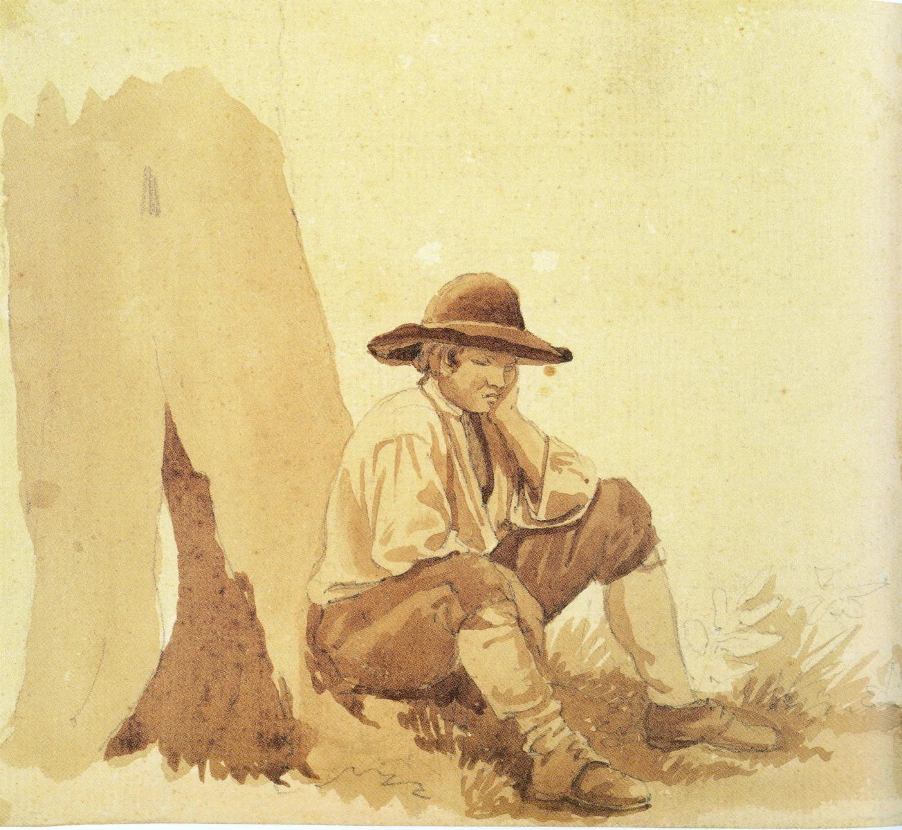

Paintings

The look at Castle Wilhelmshöhe from Pluto Grotto - 1787

The look at the Shipbuilder dam from his apartment - 1835

The Granite bowl in the Berliner Pleasure Garden - 1831
The back house and court - 1844
The chess game - 1818

Self portrait - 1795

Seated shepherd - 1795
Waterfall near Tivoli - 1795
Two ladies with lamp near the window - 1830